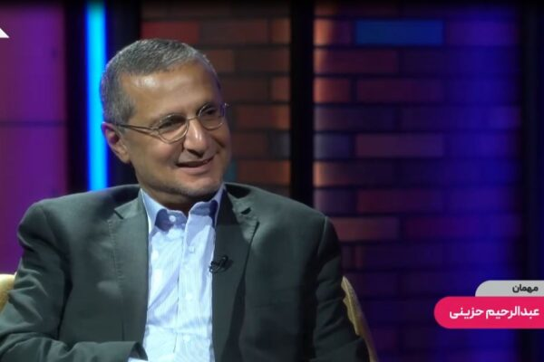
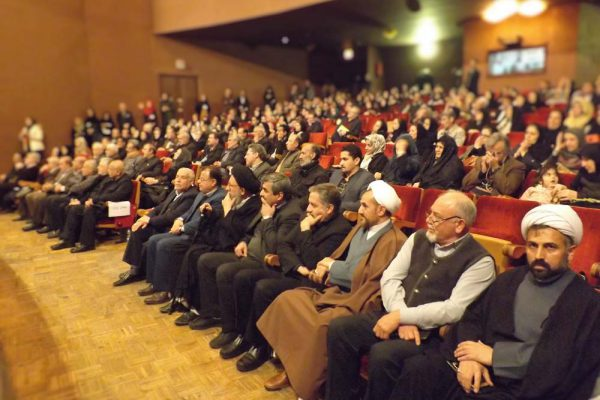
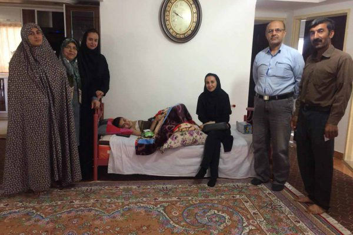

کانون حامیان بیماران سرطانی و صعبالعلاج مهر گلستان از سال ۱۳۹۳ به همت دکتر عبدالرحیم حزینی (فوقتخصص خون، انکولوژی و طب تسکینی) با هدف ارائه خدمات رایگان درمانی، مراقبت در منزل و امانت تجهیزات پزشکی تأسیس شد تا هیچ بیماری در مسیر درمان تنها نماند.
مرکز تخصصی طب تسکینی و حامی بیماران
مجموعه راهنماها و خدمات متناسب با نیاز شما و عزیزانتان طراحی شده است.
با رعایت سبک زندگی سالم، تغذیه اصولی و انجام به موقع آزمایشهای غربالگری، میتوان از بیش از ۴۰ درصد انواع سرطانها پیشگیری نمود.
ما در کنار شما هستیم تا با تسکین درد، مراقبت در منزل، تأمین تجهیزات و حمایتهای روانشناسی و معنوی، آرامش را به خانه شما بیاوریم.
تمام خدمات پزشکی، پرستاری، تجهیزاتی و مشاورهای کانون به صورت کاملاً رایگان ارائه میگردد.
اعزام کادر درمانی مجرب جهت انجام امور درمانی، سرمتراپی، پانسمان تخصصی زخم و کنترل علائم بالینی بیمار بدون نیاز به تردد بیمارستانی.
امانتدهی رایگان تخت بیمارستانی، کپسول اکسیژن، دستگاه اکسیژنساز، تشک مواج، ساکشن و ویلچر در تمام مدت درمان به بیماران نیازمند.
مدیریت تخصصی دردهای حاد و مزمن سرطانی، کنترل تهوع و ضعف ناشی از شیمیدرمانی تحت نظارت مستقیم دکتر عبدالرحیم حزینی.
جلسات مشاوره بالینی فردی و خانوادگی جهت غلبه بر اضطراب، افسردگی، پذیرش بیماری و تقویت تابآوری و امید در دوران درمان.
پاسخگویی به نیازهای وجودی و ارتقای معنویت و امید بیمار بر اساس استانداردهای سازمان جهانی بهداشت برای ایجاد آرامش عمیق درونی.
امکان سفارش استند و بنرهای شکیل تسلیت برای مراسمها، به طوری که تمام مبالغ پرداختی صرف درمان و تأمین داروهای بیماران نیازمند میگردد.
روایت تلاشهای کانون مهر گلستان و تبیین طب تسکینی در رسانه ملی.

روایت تجربه موفق و الگوی خدماترسانی به بیماران نیازمند

گزارش ویدیویی از ویزیت و مراقبت در منزل بیماران سرطانی

بررسی جامع اهمیت مراقبتهای تسکینی در بیماران خاص
دانلود مستقیم کتب مرجع، راهنماهای خانواده و انتشارات علمی طب تسکینی با فرمت PDF.
راهنمای جامع سازمان جهانی بهداشت برای طراحی و استقرار نظاممند خدمات طب تسکینی.
دانلود کتاب کاملاطلس مرجع بینالمللی تحلیل آماری نیازهای مراقبت تسکینی و استانداردهای پایان زندگی.
دانلود کتاب کاملپزشکان، پرستاران، روانشناسان و تمام نیکوکاران میتوانند با عضویت در کانون مهر گلستان، نقشی ماندگار در کاستن از رنج بیماران مبتلا به سرطان ایفا کنند.